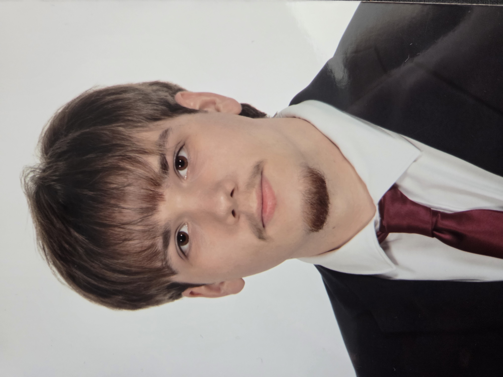

Lőrincz Dávid vagyok, 19 éves. Egy testvérem van, aki jelenleg egyetemi tanulmányait folytatja.
Már kisgyermekkorom óta érdekel az elektronika és a villamosság területe. Ebben nagy szerepe volt annak, hogy édesapám villanyszerelő, így korán betekintést nyerhettem a szakmába. Az évek során egyre inkább körvonalazódott bennem, hogy ezzel szeretnék foglalkozni a jövőben.
Nemcsak érdekesnek találom ezt a területet, hanem komoly fejlődési és karrierlehetőséget is látok benne.
A Vas Vármegyei Szakképzési Centrum Gépipari és Informatikai Technikumában tanulok, ahol ipari informatikai technikusi képzésben veszek részt.
2023 óta duálisképzésben tanulok a TDK Hungary Components Kft. tanműhelyében, ahol gyakorlati tapasztalatot és ismereteket szereztem a szakmában.
Az idei évben szakmai vizsgát teszek.
Szabadidőmbe szeretek:

- Zenéthallgatni
- Videókat nézni
- A műhelyembe dolgozni
Hobbim az elektronikai eszközök szétszerelése (pl mikrók, hangszorók és tévék)
A szakmai képzesem során ismereteket és tapasztalatot szerezhettem a szakmámhoz kapcsolodó területeken:
- PLC programozás
- C programozás alapjai
- Digitális rendszerek alapjai
- Adatbáziskezelés
- Bekötési rajzok értelmezése és megvalósitása
- Érintésvédelm
- Robot programozás
- Nyomtattot áramkörök tervezése
- Forrasztás
- Arduino programozás
- Pneumatika
A gépipariba az első két évem alapismeretek és tapasztalatok szerzéséről szólt, e két év során fémmegmunkálással, villamosságtannal, műszakirajzzal, mérésekkel, áramkörökkel és kapcsolásokkal ismerkedtem meg.
Fémmegmunkálás, műszakirajz, mérések:
A fémmegmunkálás során megismerkedtem többféle eszközökkel, mint a tolómérő, rádiuszsablon, reszelő, fűrész és oszlopos fúrógép.
A tanitás során többféle megmunkálási feladatot kaptunk, ahol műszaki rajz alapján kellet megvalósítani a munkadarabot.
A munkadarabok elkészítése során dokumentálni kell a munkadarab méreteinek a meg felelősséget a munkadaraboknak egy adott tűréshatáron belül kell lenniük.
A munkadarab dokumentálásával tapasztalatot szerezhettem a helyes dokumentáláson.
A fémmegmunkálást kiegészítő óra a műszaki rajz óránk volt, ahol a munkadarabok megtervezésével és ábrázolások gyakorlásával foglalkoztunk. Tapasztalatot szerezhettem munkadarabok ábrázolásában és megtervezésében.
Villamosságtan, kapcsolások, alap áramkörök, mérések:
A villamoságtanon belül megismerkedtem a villamosággal kapcsolatos alapelvekkel mint az Ohm törvény, Kirchhoff törvény, Norton és Thevenin helyettesítő kép és a szuperpozició elvével. Főleg számításokkal és kapcsolásokkal foglalkoztunk.
A gyakorlati órákon villamos kapcsolásokkal, mérésekkel, forrasztással, soros és párhuzamos áramkörökkel szerezhettem tapasztalatot. Az áramkörök építéséhez breadboardokat használtunk amely, elektronikai alaktrészek befogadására képes.
A méréseknél főleg multiméterrel dolgoztam ellenállás mértünk, feszültséget, és áramerősséget amelyet dokumentálni kellet ez által a dokumentálásba további tapasztalatot szereztem. Ezeken az órákon Érintés-Munka-Tűzvédelemben is szereztem ismereteket.
A 10.évfolyam végén ezekből a tantárgyakból ágazati vizsgát tettem.
A 11.évfolyamom során lehetőséget kaptam jelentkezni a TDK duálisképzésre mely szakmai kihívások elé állított és sok értékes tapasztalatot nyújtott. Első évembe a digitálistechnika, elektronika és a plc programozás alapjait sajátítottam el.
Digitálistechnikán a legalapvetőbb logikai kapukba szerezhettem betekintést amellyel bármilyen áramköri menet ábrázolható, mint az ÉS, VAGY, NAND, NOR kapuk, ezek ábrázolásával, egyszerűsítésével és alkalmazásával foglalkoztam.
Elektronikából megismerkedhettem az áramkörök alap alkatrészeivel, mint az ellenállás, a kondenzátor, a tekercs és a tranzisztor, ezek tulajdonságaival és hogyan működnek váltakozó és egyenáramú áramkörök alkalmazásában.
PLC programozás során főleg a probléma megoldókészség és az algoritmikus gondolkodás elsajátításán volt a hangsúly. Mindezek mellet tapasztalatot szerezhettem valós ipari környezetben üzemelő plc-k programozásában. Az oktatás során főleg Omron PLC-ékkel foglalkoztam mivel ezek voltak elérhetők a duálisképzés során.
A duálisképzés során nyári gyakorlatom volt minden tanév végén. Ahol eleinte fémmegmunkálással foglalkoztam, majd pedig önálló munkát végeztem háromfázisú motorok beszerelésével és gyártásból selejtezett háromfázisú motorok javításával.
Második évem során az eddigi szakmai tanulmányaimat kibővítette az adatbáziskezelés, c nyelvű programozás és a weblap szerkesztés.
Adatbáziskezelésen a Microsoftnak az SQL Server felületét használtam, ahol meg ismerkedtem több alapvető részével az adatbázisnak, mint a táblák szerkezetével, táblák közötti kapcsolatokkal és alapvető lekérdezésekkel.
C nyelvű programozás során, mint a PLC programozásnál ugyan úgy a probléma megoldókészségemet kellet hasznosítanom. A C nyelv az egyik legalapabb nyelv az assembly-n kívül mivel hardver közeli a nyelv, hírességet a gyorsaságának és a közvetlen memória eléréséhez köthető. Főleg a nyelv sajátosságait és szintaktikáját ismerhettem meg.
Weblapfejlesztés úgy hiszem magától értetődő, hogy egy ilyen óra is kellet mivel a vizsgánk egyik feltétele egy saját portfolió írása html-ben. A html-nek az alap szintaktikájával ismerkedtem meg majd a hozzá fűződő css-es amely a stílusát adja a weblapnak valamit JavaScripttel is foglalkoztam.
Ebben az tanévben is volt nyári gyakorlatom melynek során a gyártásban vehettem részt ahol megismerkedtem a TDK-nak gépeivel, nagyrészt a gépek karbantartásával foglalkoztam.
Az utolsó évemben amin a technikusi vizsgámat teszem, nagy hangsúlyt helyeztünk az Ipari buszokra, arduinó mikrokontrollerek programozására valamint tovább mélyítettük ismereteinket a PLC programozás területén.
Ipari buszokból megismerhettem a I2C, RS232, SPI, CAN, ProfiBus-t e ipari buszok tulajdonságait, különbségeit, működési elvüket.
Szemely szerint az Arduino mikrokontroller nyerte el leginkább érdeklődésem az évek során. Ismereteket szereztem a felépítéséről, valamint magáról a programozási nyelvéről. Annyira megtetszett, hogy vettem magamnak otthonra is egyet, és saját projekteket is csináltam.
A közeli fő célom hogy sikeresen elvégezzem a szakmai vizsgámat.
Bekerüljek a Budapest Műszaki Egyetemre, ahol villamosmérnőki szakon szeretnék tanulni.
Büszkévé tegyem a szüleimet, hogy erre is képes vagyok.
Távolabbi célom pedig hogy saját projekteket készítsek és valosítsak meg.
Összegzésül azt szeretném mondani hogy a Gépipari és a duálisképzés egy olyan oktatással látott el amely szakmailag elegendő lenne elhelyezkedni de, jó szakember csak abbol lesz aki élvezi a munkáját és még ért is hozzá.